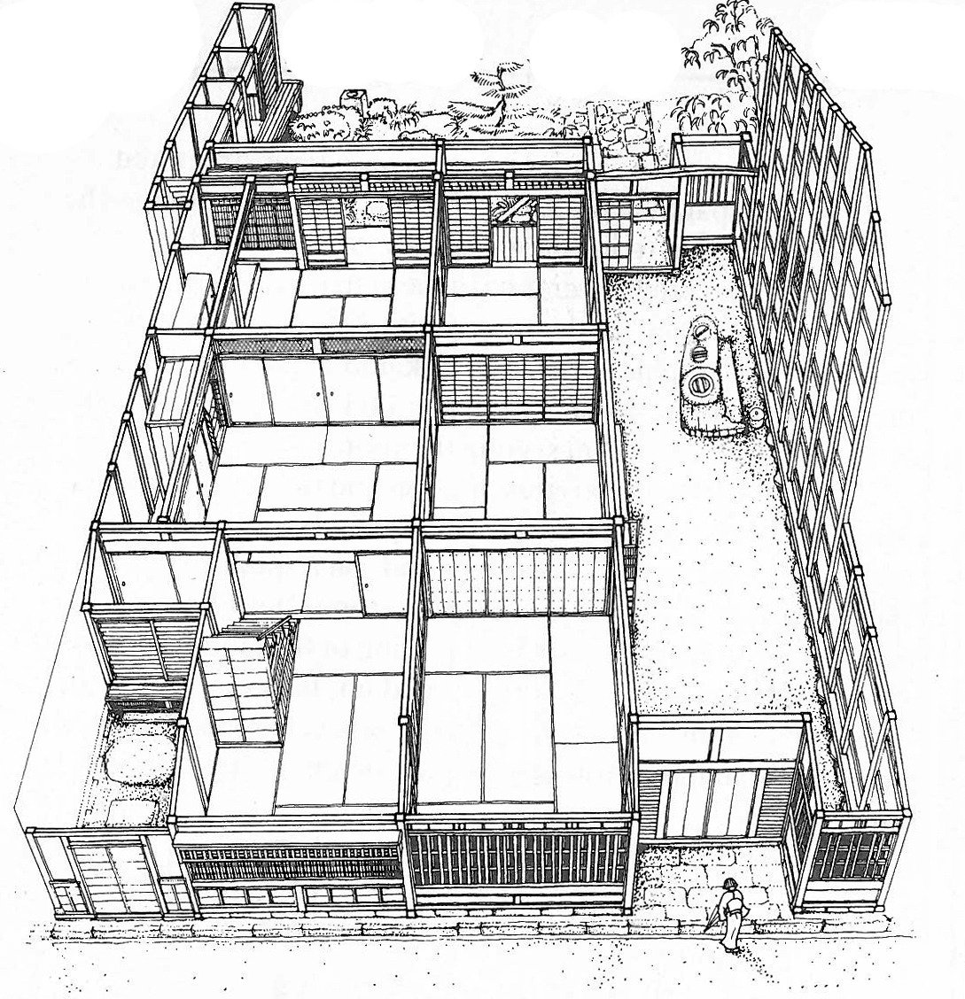
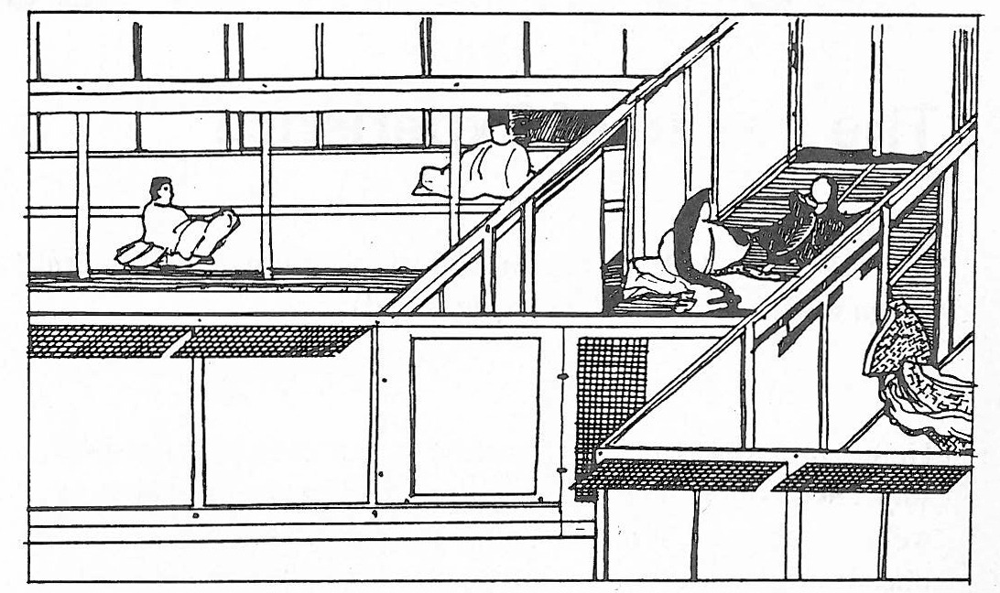
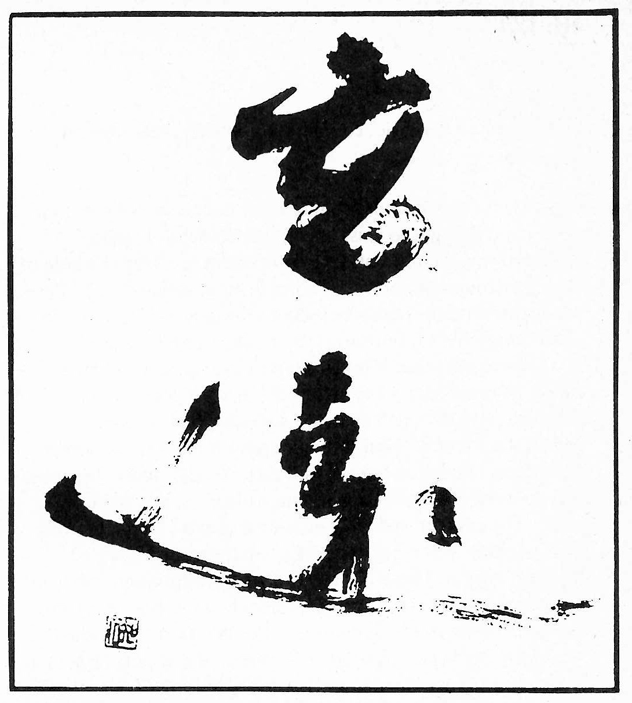
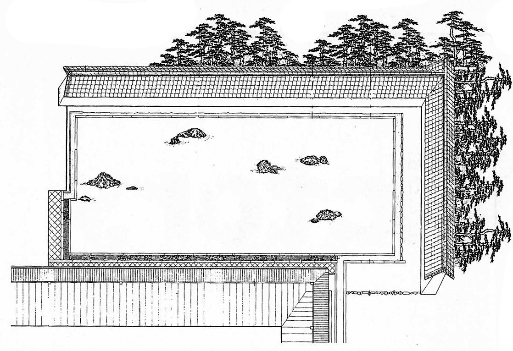

Length of time depends upon our ideas.
Size of space hangs upon our sentiments.
For one whose mind is free from care,
A day will outlast the millennium.
For one whose heart is large,
A tiny room is as the space between heaven and earth.1
Originally, this character consisted of the pictorial sign for “moon” (月) — not the present-day “sun” (日) — under the sign for “gate” (門). For a Chinese or Japanese using language consciously, this ideogram, depicting a delicate moment of moonlight streaming through a chink in the entranceway, fully expresses the two simultaneous components of sense of place: the objective, given aspect and the subjective, felt aspect.
It must be stressed that a ‘sense of place’ does not negate an objective awareness of the static or homogenous quality of topological space. Rather, it infuses the objective space with an additional subjective awareness of lived, existential, non-homogenous space. It also incorporates a recognition of the activities which ‘take place’ in a particular space, and different meanings a place might have for various individuals or cultures. “Physical appearance, activities, and meanings are the raw material of the identity of places…” 5
From the hundreds of uses of the character ma in traditional and modern Japanese, I have selected a few which I present here in order of increasing complexity of meaning.
3.
Norberg-Schulz, Christian. Genius Loci — Towards a Phenomenology of Architecture, Rizzoli, New York 1980.
4.
Itoh Teiji, Nihon dizain ron (Discourses on Japanese Design), Kashima Kenkyujo, Tokyo 1966. “Nihon no toshi kukan” (Japanese Urban Space), Kenchiku Bunka 12, Tokyo, 1963
5.
Ralph, Edward, Place and Placelessness, Pion Ltd, London, 1976.
梁間 (hari-ma) Beam span
Here ma denotes a line in space, a measure of length or distance. From ancient times Japanese architecture was based on wooden post-and-beam construction. The distance between the centerlines of successive posts — the hashira-ma (橋ラマ) — evolved into the basic structural unit of the traditional Japanese wooden house. To signify this carpentry measure, the character is pronounced ken. (Over time and in different regions of the country the ken varied in length from about 10 to 6 feet). By the 16 century, all column sizes and timber dimensions were expressed as fractions or multiples of ken. The sizes of the rush mats which evolved into tatami were also originally derived from the ken.
Ma: The Two-Dimensional Realm
六畳の間 (roku jo no ma) Six-tatami room (literally: six tatami area)
Ma combined with a number of tatami mats denotes area. For a Japanese, however, a reference to a room of a certain number of floor mats would also instantly call to mind a particular usage, interior makeup, decoration and height.7
Since the adoption of the tatami in Japanese residential architecture about 500 years ago, there have been two ways of expressing land area: the tsubo (坪), an area one ken square measured from the centerlines of the columns; and jo (帖), the area covered by one tatami. Neither is an exact measure. The tsubo does not respect the thickness of the walls, while tatami sizes vary from region to region. For modern construction, the square meter is always used.

Isometric sketch of a typical machiya townhouse of Nara Prefecture in Imaecho, showing a doma as a kitchen and workspace (From Nihon no Minka, Gakken, Tokyo 1980)
Ma: The Three-Dimensional Realm
空間 (ku-kan) Space (literally: empty place)
7.
For a detailed study of the relationship between a room size and its social use over history, see Kojiro Junichiro, “Kokono-ma ron” (The Ninemat Room), in SD: Space Design, Tokyo, June 1969.
Today ku is used for “empty” in the simple physical sense, and for “void” in Buddhist metaphysics. The compound ku-kan and for “void” in Buddhist metaphysics. The compound ku-kun is of recent origin. It was coined to express the concept of three-dimensional objective space which was imported from the West, for which the Japanese language had no word of its own. (The Western concept was, and still is, inherently static and unchanging, without any dynamic sense of variation or human subjectivity. It is merely three-dimensional.)
Thus ku-kan compounds two characters which are charged with independent meanings by long Chinese and Japanese cultural traditions including Buddhism. These traditional meanings soon influenced the compound, yielding a meaning different from the original intent, and causing some obvious confusion in postwar architectural writing.
The structure of Japanese dictates a linguistic description of space different from that of European languages, as illustrated in the following combinations of ma with other characters.
土間 (do-ma) Work space (literally: earth place), especially in farmhouses with stamped-earth floors
間引く (ma-biku) To thin out (literally: to draw or pull space), making room for plants to grow
貸間 (kashi-ma) Room to let
茶の間 (cha-no-ma) Tea room; because of the word “cha” (tea), this denotes space in the home where guests are entertained or the family gathers
床の間 (toko-no-ma) Display alcove in the traditional Japanese sitting or guest room for a scroll, flower arrangement or objet d’art
The toko-no-ma is at once a spatial and an aesthetic concept, and furthermore ahs an important social connotation in Japanese life. Classically it constitutes the unifying focus between host and guest, through an act of creation on the part of the host and an act of appreciation on the part of the guest.
虎の間 (tora-no-ma) The Tiger Room (literally, place of tigers) is the name of a room in the abbot’s quarters at Nanzenji in Kyoto. The dominant decorative motif on the sliding doors becomes the qualifier of the entire space, a common custom in mansions, castles, temples and present-day hotel ballrooms. The naming of places, manmade or natural, is a universal means of giving meaning and identity to a lived or existential space.
鏡の間 (kagami-no-ma) Dressing room (literally: mirror room) separated from the noh stage by a curtain. This is the place reserved for the magical transformation of the actor, via the donning of the spiritually-charged noh mask, and the meditation or inner-reflection involved in facing the full-length mirror.

Fukinuke-yatai painting techniques by which the viewer is invited to move from scene to scene. (Redrawn from Kasuga Gongen scroll c. 1300)
時間 ( ji-kan) Time (literally: time-place)
This is abstract time, with no indication of length, beginning or end. The ji character, which incorporates the radical for “sun,” is said to have denoted “forward movement of the sun” in ancient China. In Japanese the character is also pronounced toki, perhaps from the very old Japanese verb toku, to melt or dissolve. Thus “time” is expressed in Japanese as “space in flow,” making time a dimension of space. Indeed, time is essential to human experience of place.
Here are a few modern Japanese phrases in which ma (sometimes pronounced kan) denotes stretches of time.
瞬間 (shun-kan) A moment (literally: a blink or twinkle of time)
間に合う(ma-ni-au) To be in time for (literally: to meet the time)
間もなく(ma mo naku) Soon (literally: in no time)
Most cultures measure and express time in terms of intervals in space (or at least they did so before digital clocks replaced sundials and watchdials). It is not surprising then, that the same Japanese character, pronounced variously as ma or aida or kan, can be used to denote either temporal or spatial extension. Some examples:
相間 (ai-no-ma) Literally: reciprocating place
1. A room in between
2. Interval, leisure
間近い (ma-jikai) Literally: a close space
1. Close at hand (spatially)
2. Drawing near (temporally)
間者 (kan-ja) Spy (literally: ma person); one who works in between known spaces or known hours
間男 (ma-otoko) Adulterer (literally: ma man) one who makes love in between usual places or usual times.
The dual relation of ma to space and time is not simply semantic. It reflects the fact that all experience of space is a time-structured process, and all experience of time is a space-structured process.
When we look at a traditional Japanese scroll picture or emaki-mono, time is concretely present as our eyes follow a sequence of spatial events interrupted by writing. Our hands actually unroll the scroll, that is, “move the space” as time passes. Nothing could be more detrimental to the intended narrative process of viewing than a full simultaneous display of the scroll as a whole. In traditional Japanese paintings of palaces and gardens shown in the fukinuke-yatai or “blown-away rooftop” technique, time becomes part of our spatial experience as our eyes have to move from scene to scene in various adjacent spaces.
In traditional tourist manuals of famous scenic routes, which were sold as small books and could be unfolded into continuous strip pictures often more than 20 feet in length, an additional technique was used to represent space as a time-structured process. The spatial sights would be drawn above and below the continuous central road, shown as they would unfold themselves concretely over time to the actual traveller. Thus we end up with a “plan” of the route quite different from our modern orthographic maps. In a Tokaido manual of the mid-nineteenth century, for instance, Mt. Fuji is represented about 50 times in various settings along the route.
We can find a similar presentation and understanding of space as a time and mood structured process in the layout of traditional Japanese stroll gardens and, on a smaller scale, a traditional Japanese stroll gardens and, on a smaller scale, in the placement of tobi-ishi, (“skipping stones”) used to make garden paths. By a sophisticated placing of the stones, our foot movements can be slowed down, sped up, halted or turned in various directions. And with our legs, our eyes are manipulated, and our visual input from spatial phenomena is structured over time.
Ma: The Realm of Experience
間が悪い (ma ga warui) I am uncomfortable, embarrassed (literally: the placing is bad)
Here a time/space metaphor is used to express a very personal, subjective notion. The phrase is used in everyday situations as well as in the arts. It means that a place or situation is uncomfortable, because of either the atmosphere (environmental or social) or one’s own mood, with the result that one becomes self-conscious or embarrassed. A contemporary rendering might be, “the vibes are bad.”
Many waka and haiku poems begin with a phrase that employs ma to paint the atmosphere of energy of the setting.
Examples:
木の間 (ko-no-ma) Among trees (literally: place/time/mood of trees)
波間 (nami-ma) On waves (place/time/mood of waves)
岩間 (iwa-ma) On rocks (place/time/mood of rocks)

Calligraphy in the grass style, meaning “mysterious and far away”, painted by Kimura in 1983. (From Sumi, November 1983, Geijutsu Shimbunsha, Tokyo)
Ma: The Realm of Art
Ma ga warui or its opposite, ma ga umai, is often used an aesthetic judgment of Japanese calligraphy or sumi-e painting. Compared with Western painting, these Sino-Japanese art forms involve large unpainted areas. Anyone practicing calligraphy soon realizes that proficiency lies not merely in mastering the form of the characters, but also in the relationship of the form to the surrounding non-form. This balance of form and space will always be taken into account in the final artistic judgment.
The proper appreciation of calligraphy also takes note of the dimension of time, for calligraphy is more than simple painting o drawing. It is an intricate mixture of poetry, dance and action painting. It is not only the placing of form into space, but also the marking of rhythm in time — the traces of the movement and speed of the brush.
In the area of the performing arts, the following is the typical phrase used to praise used to praise a performance of rakugo, the traditional comic storytelling genre:
(hanashi no ma go umai) This time (ma) of the story was excellent
The aesthetic quality of the rakugo performance depends as much or more on the time of the pauses as on the quality of the voiece. The pause is both an interval in time and a bridge between sound and silence. The 15-century poet Shinkei had this to say about ma in the recitation of poetry: “In linked verse, pt your mind to what is not.”
This admonition corresponds to the oft-quoted dictum on noh acting by Zeami, the great forumlator of the noh plays: “What [the actor] does not do is of interest” (Senu tokoro ga omoshiroki). Indeed, Komparu Kunio regards noh as no more nor less than the art of ma: the staging is meant to “create a constantly transmuting, transforming space [ma] of action”; the acting, to do “just enough to create the ma that is a blank space-time where nothing is done”: the music, to “exist in the negative, blank spaces generated by the actual sounds”’ and the dance, to acquire “the technique of non-movement.”10
9.
Dubos, Rene. A God Within, Scribner’s, New York, 1972.
間取り (ma-dori) Design (literally: grasp of place.)
The Japanese architect traditional worked to “create a sense of place” (ma-dori o tsukuru). Implicit in this term, according to architect Seike Kyoshi11, was the design not only of structural elements in space, but also of the variable arrangements for temporary uses which are so characteristic of the Japanese dwelling. By adding and removing sliding doors, windows, portable screens and other household utensils, the Japanese home is adapted to changing seasons, uses and social needs. Nowadays, unfortunately, the term ma-dori, so charged with connotations of place, has been replaced with an “exotic” imported term: dizain (design).
11.
Seike Kyoshi, “Sumai to ma,” in Nihonjin to ma, Kenmochi Takehiko, ed., Kodansha, Tokyo 1981.
Japanese collective conditioning is very well developed. The importance of sense of place to this mindset is revealed in some of the phrases used to describe cases of deficiency.
Japanese collective conditioning is very well developed. The importance of sense of place to this mindset is revealed in some of the phrases used to describe cases of deficiency.
間抜け (ma-nuke) Simpleton, fool (literally: someone missing ma)
間違う (ma-chigau) To be mistaken (literally: place differs)
Clearly, the Japanese language is shot through with a dynamic sense of place. But the profound importance of the ma concept in Japanese society is best revealed in the everyday terms for “human being” and “the world”:
人間 (nin-gen) Human being (literally, person-place or person-inrelationship)
世間 (se-ken) World, society (literally: world-place or world-inrelationship)
仲間 (naka-ma) Coterie; companion (literally: relationship-place)
Two related conclusions seems to offer themselves. First, that people are thought to exist only in the context of “place.” Manking was seen as only one component in a bigger whole of man/environment/nature. The implication is that the greater the whole, rather than human beings by themselves, is the measure of all things. This is reinforced by Buddhist philosophy.
The second point is more obvious in Japanese behavior: everyone must have a social “place,” for it is one’s social relations, and not one’s individual characteristics, that constitutes identity. Hence the ubiquitous namecard, clearly identifying the bearer’s place and role. Traditionally, Japanese had no word corresponding to “individual” in the Western sense. The current word for “individual,” kojin (個人 literally, itemperson), was coined recently to express an imported Western notion. There has always been the common word for person/people, hito (人), but it refers to a discrete body and has none of the isolating nuance of the Western “individual.”
In the Japanese language, and thus in the society, a person is conceived of as a flexible and easily linkable dividuum, that is, as part split from and belonging to a larger whole. Everyone is educated to shake off the delusion of a separate individual ego, and to express supra-individual values. What characterizes a person as human is that one is always together with other humans. In Japanese history, the only physical escape from the community was through withdrawal into the mountains, and in that case a person was referred to as sen-nin (仙人) “hermit”, a world of otherworldly nuance. There never has been a Japanese word for “privacy.”
In contrast, the Western mind has tended to envisage the human being as a perfect and self-contained individuum (that is, indivisible whole) who should be educated to distinguish oneself from everyone else. We are encouraged to view the self as real, to discipline I and to express highly individual values. The desire to produce individual genius, a “superman,” has haunted all of Western history.
The corresponding social ideas are of course diametrically opposed: the Western society of self-assertion, of the eternal conflict of individual interests, and the Japanese society

Bird’s-eye view of the rock at Ryoanji (From Izozaki Arata, Ma: Space/Time in Japan, Cooper-Hewitt Museum, New York 1976)>
絶え間 (taema) Pause, gap (literally: discontinuous place)
The first poem catches a momentary glance over the Inland Sea:
Kumori naki
yama nite umi no
tsuki mireba
shima zo kohori no
tae-ma narikeri
Not clouded
mountains around the sea
in which the moon I see;
the islands, in ice
holes become.
The second poem relates the scene of a rainstorm in the monk’s hut:
mizu no oto wa
sabishiki io no
tomo nare ya
mine no arashi no
tae-ma tae-ma ni
Sound of water,
of this lonely hermitage
the only friend becomes,
in the gaps and gaps
of the mountain storm.12
With the discussion of the void we have left the scope of phenomenology, architectural or otherwise. The “void” in the Buddhist sense is not a concept arrived at by rational thought, but an expression of an incommunicable individual experience, accessible only to a person practicing meditation.
The classic expression of the paradoxical nature of this emptiness is or no-thingness is the Heart Sutra. It is one of the discourses ascribed to Gautama Buddha, and is recited by almost all Buddhist sects in Japan. It begins with:
This world view offered by Buddhism only makes sense if one appreciates the first word of the sutra, the word “here.” “Here” means “in my state of being,” that is, enlightenment. Thus, for the normal human being the sutra cannot make sense; it will stay utterly paradoxical. Ultimately, nothing can be stated about the “void.” It is impossible even to think about it.
Nevertheless, enlightened ones, each in their own way, have created many devices with which they have tried to lure their disciples into a state of being in which the above phrase does make sense.
Buddha used words and what he said has been transmitted to us in the sutras. Chinese and Japanese enlightened masters who have followed his path have used poetry, painting and gardening to communicate their messages. One of the most famous examples, and for me an effective one, is the rock-garden at Ryoanji, the “Peaceful Dragon Temple” in Kyoto. We do not know who created the garden, nor when it was created in its present form. It is a karesansui (dry landscape garden), to be appreciated from a fixed vantage point, on the verandah of the temple.
13
Rajneesh, Bhagwan Shree, The Heart Sutra, Rajneesh Foundation, Poona 1977.
This “experience” — the word has to be used in quotation marks now — of consciousness is the “experience” of the “void,” of “no-thingness,” of “emptiness.” It is therefore not a philosophical or aesthetic concept, but a notion derived from personal experience, a notion both beside and beyond the personal experience, a notion both beside and beyond the experience of our physical world. It does not deny it. It is based on the reversal of the usual flow of our energy.
A blank surface of sand in front of a Buddhist temple or an empty sheet of white paper in Zen painting is not enough to trigger this insight. Architecture, gardening, painting or poetry, that is, some highly sophisticated setting of form and non-form, is necessary to “experience” the void in the above sense. Only a poet can put this paradox into words:
This essay is featured in our Understanding Japan Bundle and first appeared in KJ 8, published in Fall, 1988, and is digitally reprinted here with the author’s kind permission.
Made with in Kyoto, Japan
Recipient of the Comissioner’s Award of the Japanese Cultural Affairs Agency 2013